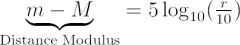
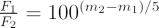
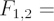
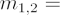
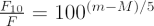
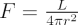
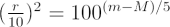
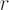
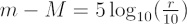

The ‘distance modulus’ is the difference between the apparent magnitude and absolute magnitude of a celestial object (m – M), and provides a measure of the distance to the object, r.
 |
where | m = | apparent magnitude of the star |
| M = | absolute magnitude of the star, and | ||
| r = | distance to the star in parsecs |
This table shows the apparent and absolute visual magnitudes of some stars and their distances:
| Star | mv | Mv | d (pc) |
|---|---|---|---|
| Sun | -26.8 | 4.83 | |
| Alpha Centauri | -0.3 | 4.1 | 1.3 |
| Canopus | -0.72 | -3.1 | 30.1 |
| Rigel | 0.14 | -7.1 | 276.1 |
| Deneb | 1.26 | -7.1 | 490.8 |
We can derive the expression for distance modulus by using the relation between the flux ratio of two stars and their apparent magnitudes:
 |
where |  |
flux from stars 1 and 2 |
|  |
apparent magnitude of stars 1 and 2 |
Consider a star of luminosity L and apparent magnitude m, at a distance r. Now we apply the relation for the ratio of the flux we receive from the star, F, and the flux we would receive if the star was at a distance of 10 parsec, F10. Identifying m1 as the apparent magnitude of the star and m2 as the absolute magnitude, the last equation becomes:
 |
where | m = | apparent magnitude of the star | |
| M = | absolute magnitude of the star | |||
| F = | flux we receive from the star, and | |||
| F10 = | flux we would receive if the star was at 10 parsecs |
The flux and luminosity of a star are related by:

Substituting for F and F10, L cancels out (luminosity is an intrinsic property of the star and does not depend on the distance to the observer), and we have:

, with
in parsecsRearranging gives the distance modulus:

, with in parsecs